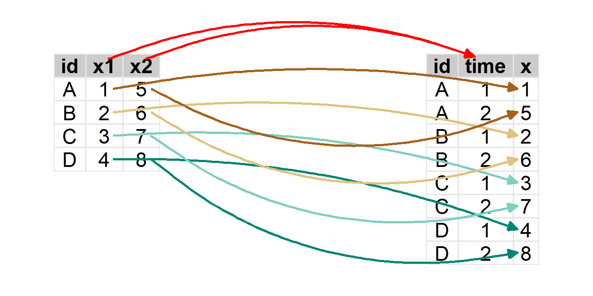

Module 5 Pivot
Three rules of tidy data were introduced in Section 2.4.
- Each variable must have its own column.
- Each observation must have its own row.
- Each value must have its own cell.
There are a wide variety of ways to enter data. Some data will not be tidy because, for instance, it may be easier to enter data in a non-tidy format. For example, the data shown below is the number of positive confirmed COVID cases in Ashland, Bayfield, and Douglas counties in 2021 (through June).
| County | Jan_2021 | Feb_2021 | Mar_2021 | Apr_2021 | May_2021 | Jun_2021 |
|---|---|---|---|---|---|---|
| Ashland | 139 | 27 | 31 | 41 | 45 | 3 |
| Bayfield | 100 | 33 | 28 | 54 | 36 | 15 |
| Douglas | 470 | 89 | 119 | 227 | 148 | 32 |
Data for future months can be easily entered by simply appending a new month on the right. These data are also easy to examine in this table, but in this format they are difficult to graph and can be difficult to summarize. Thus, these data need to be converted to a different format for some simple analyses.19
The objective of this module is to describe and demonstrate concepts and methods for converting data between two common formats.
5.1 Data Formats
Consider a situation with one measurement variable, x, recorded on four individuals at two times. These eight measurements could be entered in either the W or L data frames shown below.
|
‘W’ data.frame
|
||
|---|---|---|
| id | x1 | x2 |
| A | 1 | 5 |
| B | 2 | 6 |
| C | 3 | 7 |
| D | 4 | 8 |
|
‘L’ data.frame
|
||
|---|---|---|
| id | time | x |
| A | 1 | 1 |
| A | 2 | 5 |
| B | 1 | 2 |
| B | 2 | 6 |
| C | 1 | 3 |
| C | 2 | 7 |
| D | 1 | 4 |
| D | 2 | 8 |
In this case, a measurement of x on an individual at a single point in time is an observation; thus, each row should correspond to one measurement (value of x) on one individual. The W data frame is not tidy because multiple observations of x appear in each row of the data frame (i.e., the single measurement variable, x, is dispersed across two columns). The L data frame is tidy because each row corresponds to one observation (i.e., a unique combination of id and time) and the single measurement variable, x, now appears in only one column.
Consider a similar example where two measurements (the variables x and y) were made (at the same time) on four individuals. These data may be entered as in V and Z below.
|
‘V’ data.frame
|
||
|---|---|---|
| id | x | y |
| A | 1 | 5 |
| B | 2 | 6 |
| C | 3 | 7 |
| D | 4 | 8 |
|
‘Z’ data.frame
|
||
|---|---|---|
| id | variable | value |
| A | x | 1 |
| A | y | 5 |
| B | x | 2 |
| B | y | 6 |
| C | x | 3 |
| C | y | 7 |
| D | x | 4 |
| D | y | 8 |
In this case V is tidy because each row corresponds to one observation (defined only by id) and each measurement variable (x and y) is in its own column. On the other hand Z is not tidy because observations are split into two rows and values of the two different measurement variables are lumped into the same column.
As you can see it can be difficult to identify the format that you want for your data. You cannot tell simply by the “shape” of the data – there will be times when you need the data to be “longer” (as in the first example above) and other times when you need the data to be “wider” (as in the second example above).
As a general rule you should strive for your data to be tidy. To identify tidy data, identify what an observation is, which variables define the observations, and what the measurement variable(s) is/are. Then determine if each row corresponds to one observation and if each measurement variable is in one column by itself. If the data do not meet these requirements then you likely need to convert it to a different format as described in the next sections.
5.2 Pivoting Concepts
Each set of data described in the previous section could be entered in two formats. These formats are loosely called “wider” and “longer” based on their shapes relative to each other. Converting between wider and longer format data is called a pivot.
5.2.1 Pivot Longer
“Pivot Longer” is the conversion from a “wider” to a “longer” format. Pivoting to a longer format is usually needed if multiple observations of the same variable are recorded on individuals but are stored in separate columns of the data frame. This was the case with W above and also with the COVID data in the module introduction.
To pivot from a wider to a longer format you must identify the variables in the wider format that contain the multiple measurements of the same variable. This was x1 and x2 in W. All other variables in the data frame are considered to represent a unique individual. In this case only the id variable is needed for this purpose.
In addition, you must define names for variables in what will be the new longer format. The first name is for the variable that will identify the multiple measurements on the same individual. In this example the multiple measurements were taken at different times, so it seems logical to call the new variable time. The second name is for the variable that will hold the values of the measurement variable. Here the use of x1 and x2 in the original wider data frame suggest that this variable should be called x.
The process of pivoting the wider W to a longer data frame is illustrated below.

To pivot from a “wider” to a “longer” format, you must …
- Identify the variables in the wider format data that contain the multiple measurements of the same variable. This will be
cols=in Section 5.3.1. - Define a name for the variable in the new longer format that will identify the multiple measurements on the same individual. This will be
names_to=in Section 5.3.1. - Define a name for the variable in the new longer format that will hold the values of the measurement variable. This will be
values_to=in Section 5.3.1.
5.2.2 Pivot Wider
“Pivot Wider” is the conversion from a “longer” to a “wider” format. Pivoting to a wider format is most common when multiple measurement variables are recorded as one variable in the longer format. This was the case with Z from above.
To pivot from a longer to a wider format you must identify the variable in the longer format that contains what will be names of variables in the wider format. The wider format that will be created from Z should have x and y as names of variables; thus, this variable in Z is variable. In addition, you must identify the variable in the longer format that has the values of the measurement variable that will be separated into columns in the wider format. In Z this variable is value.
The process of pivoting the longer Z to a wider format is illustrated below.
To pivot from a “longer” to a “wider” format, you must …
- Identify the variable in the longer format that contains the names of the new variables in the new wider format. This will be
names_from=in Section 5.3.2. - Identify the variable in the longer format that contains all of the values of the measurement variable. This will be
values_from=in Section 5.3.2.
5.3 Pivoting in R
Pivoting W to a longer format and Z to a wider format in R are demonstrated in this section. These two data frames are created in R below.
W <- tibble(id=c("A","B","C","D"),
x1=1:4,
x2=5:8)
W#R> # A tibble: 4 x 3
#R> id x1 x2
#R> <chr> <int> <int>
#R> 1 A 1 5
#R> 2 B 2 6
#R> 3 C 3 7
#R> 4 D 4 8Z <- tibble(id=rep(c("A","B","C","D"),each=2),
variable=rep(c("x","y"),times=4),
value=c(1,5,2,6,3,7,4,8))
Z#R> # A tibble: 8 x 3
#R> id variable value
#R> <chr> <chr> <dbl>
#R> 1 A x 1
#R> 2 A y 5
#R> 3 B x 2
#R> 4 B y 6
#R> 5 C x 3
#R> 6 C y 7
#R> 7 D x 4
#R> 8 D y 85.3.1 Pivot Longer
Pivoting to a longer data frame is accomplished with pivot_longer() from tidyr (which is part of tidyverse). The first argument is the name of the wider data frame. The following three arguments are also typically used.
- The variables in the wider data frame that represent multiple measurements of the same variable must be given in
cols=. Note that these variables do NOT need to be in quotes because they exist in the wider data frame. There are multiple ways to select these variables in most situations; here are several for this situation.20cols=x1:x2will select all variables contiguous from betweenx1tox2.cols=c(x1,x2)will select only variablesx1andx2.cols=starts_with("x")will select all variables with names that begin withx.cols=-idwill select all variables not namedid.
- The name for the variable in the new longer data frame that will hold the index for multiple measurements on the same individual in the longer data frame is given in
names_to=. - The name for the variable that will hold the values of the measurement variable in the new longer data frame is given in
values_to.
Note that the variable names in names_to= and values_to= must be in quotes because they do not yet exist in the new data frame.
Given the definitions of these items in Section 5.2.1, the following code is used to pivot W to a longer format data frame, L.
L <- pivot_longer(W,cols=x1:x2,names_to="time",values_to="x")
L#R> # A tibble: 8 x 3
#R> id time x
#R> <chr> <chr> <int>
#R> 1 A x1 1
#R> 2 A x2 5
#R> 3 B x1 2
#R> 4 B x2 6
#R> 5 C x1 3
#R> 6 C x2 7
#R> 7 D x1 4
#R> 8 D x2 8Note, however, that the time variable in L contains x1 and x2 rather than 1 and 2. By default pivot_longer() uses the names of the variables you supplied in cols= for this variable. If these variables have a common pattern – as in they all start with “x” and end with the number that we want – then the portion of the pattern to remove can be given in names_prefix=.21
L <- pivot_longer(W,cols=x1:x2,names_to="time",names_prefix="x",values_to="x")
L#R> # A tibble: 8 x 3
#R> id time x
#R> <chr> <chr> <int>
#R> 1 A 1 1
#R> 2 A 2 5
#R> 3 B 1 2
#R> 4 B 2 6
#R> 5 C 1 3
#R> 6 C 2 7
#R> 7 D 1 4
#R> 8 D 2 8
A reminder that all variables not given in cols= will be considered as identifying with the individuals in the data frame. Suppose for example that W had more columns like this data frame W2.
#R> # A tibble: 4 x 6
#R> id fname lname years x1 x2
#R> <chr> <chr> <chr> <dbl> <int> <int>
#R> 1 A Derek Ogle 25 1 5
#R> 2 B Young Kim 32 2 6
#R> 3 C Andrew Jensen 6 3 7
#R> 4 D Jodi Supanich 7 4 8The same pivot_longer() with W2 will repeat the id, fname, lname, and years values in the longer data frame L2.
L2 <- pivot_longer(W2,cols=x1:x2,names_to="time",names_prefix="x",values_to="x")
L2#R> # A tibble: 8 x 6
#R> id fname lname years time x
#R> <chr> <chr> <chr> <dbl> <chr> <int>
#R> 1 A Derek Ogle 25 1 1
#R> 2 A Derek Ogle 25 2 5
#R> 3 B Young Kim 32 1 2
#R> 4 B Young Kim 32 2 6
#R> 5 C Andrew Jensen 6 1 3
#R> 6 C Andrew Jensen 6 2 7
#R> 7 D Jodi Supanich 7 1 4
#R> 8 D Jodi Supanich 7 2 8
5.3.2 Pivot Wider
Pivoting to a wider data frame is accomplished with pivot_wider() from tidyr. The first argument is the name of the longer data frame. The following two arguments are also typically used.
- The name of the variable in the longer data frame that contains what will be names of variables in the wider data frame is given in
names_from=. - The name of the variable in the longer data frame that has values of the measurement variable that will be separated into columns in the new data frame is given in
values_from=.
As both of these variables exist in the longer data frame they do NOT need to be in quotes.
Given the definitions from Section 5.2.2, the following is used to pivot Z to a wider format, V.
V <- pivot_wider(Z,names_from=variable,values_from=value)
V#R> # A tibble: 4 x 3
#R> id x y
#R> <chr> <dbl> <dbl>
#R> 1 A 1 5
#R> 2 B 2 6
#R> 3 C 3 7
#R> 4 D 4 8
Again, you can imagine a slightly more complicated data frame (here called Z2).
#R> # A tibble: 8 x 6
#R> id fname lname years variable value
#R> <chr> <chr> <chr> <chr> <chr> <dbl>
#R> 1 A Derek Ogle 25 x 1
#R> 2 A Derek Ogle 25 y 5
#R> 3 B Young Kim 32 x 2
#R> 4 B Young Kim 32 y 6
#R> 5 C Andrew Jensen 6 x 3
#R> 6 C Andrew Jensen 6 y 7
#R> 7 D Jodi Supanich 7 x 4
#R> 8 D Jodi Supanich 7 y 8The same pivot_wider() on Z2 will collapse the common id, fname, lname, and years variables.
V2 <- pivot_wider(Z2,names_from=variable,values_from=value)
V2#R> # A tibble: 4 x 6
#R> id fname lname years x y
#R> <chr> <chr> <chr> <chr> <dbl> <dbl>
#R> 1 A Derek Ogle 25 1 5
#R> 2 B Young Kim 32 2 6
#R> 3 C Andrew Jensen 6 3 7
#R> 4 D Jodi Supanich 7 4 8
5.4 Examples with Context
5.4.1 COVID Cases by County and Month
A simple data frame of COVID cases by month in three Wisconsin counties from January to June 2021 was shown in the introduction. Here consider an even wider data, covABD_W, of monthly cases for all three counties from March 2020 to June 2021.
covABD_W#R> # A tibble: 3 x 17
#R> # Groups: County [3]
#R> County Mar_2020 Apr_2020 May_2020 Jun_2020 Jul_2020 Aug_2020 Sep_2020 Oct_2020
#R> <chr> <dbl> <dbl> <dbl> <dbl> <dbl> <dbl> <dbl> <dbl>
#R> 1 Ashland 1 1 0 1 16 16 94 167
#R> 2 Bayfield 3 0 0 0 16 26 71 160
#R> 3 Douglas 6 3 10 11 93 133 268 316
#R> # ... with 8 more variables: Nov_2020 <dbl>, Dec_2020 <dbl>, Jan_2021 <dbl>,
#R> # Feb_2021 <dbl>, Mar_2021 <dbl>, Apr_2021 <dbl>, May_2021 <dbl>,
#R> # Jun_2021 <dbl>In this case a “measurement” is number of COVID cases and an observation is a combination of month and county. Thus, these data are not tidy because number of COVID cases is not in one column and each row is not one combination of county and month. It would be difficult to plot number of cases by month for each county with data in this format. Thus these “wider” data need to be converted to “longer” data that are tidy.
All columns except County are part of the data to pivot; thus, cols=-County is the easiest way to choose those columns. The variable names in covABD_W are the month and year of the data so I will call the names_to= variable “MonYear.” Finally, the measurements are of cases of COVID so I will call the values_to= variable “Cases.” Putting this together gives the following.
covABD_L <- pivot_longer(covABD_W,cols=-County,names_to="MonYear",values_to="Cases")
covABD_L#R> # A tibble: 48 x 3
#R> # Groups: County [3]
#R> County MonYear Cases
#R> <chr> <chr> <dbl>
#R> 1 Ashland Mar_2020 1
#R> 2 Ashland Apr_2020 1
#R> 3 Ashland May_2020 0
#R> 4 Ashland Jun_2020 1
#R> 5 Ashland Jul_2020 16
#R> 6 Ashland Aug_2020 16
#R> 7 Ashland Sep_2020 94
#R> 8 Ashland Oct_2020 167
#R> 9 Ashland Nov_2020 378
#R> 10 Ashland Dec_2020 331
#R> # ... with 38 more rowsThis worked but the MonYear variable is problematic because R does not recognize it as a date (note how it is identified as character class). It would be better to split these names on the underscore to get one variable with the months and one variable with the years. Names may be split in pivot_longer() by providing the character to split on in names_sep=. As splitting the names will produce two new variables, names_to= must be a vector with two names for these two new columns. These modifications produce the following result.
covABD_L <- pivot_longer(covABD_W,cols=-County,
names_to=c("Month","Year"),names_sep="_",values_to="Cases")
covABD_L#R> # A tibble: 48 x 4
#R> # Groups: County [3]
#R> County Month Year Cases
#R> <chr> <chr> <chr> <dbl>
#R> 1 Ashland Mar 2020 1
#R> 2 Ashland Apr 2020 1
#R> 3 Ashland May 2020 0
#R> 4 Ashland Jun 2020 1
#R> 5 Ashland Jul 2020 16
#R> 6 Ashland Aug 2020 16
#R> 7 Ashland Sep 2020 94
#R> 8 Ashland Oct 2020 167
#R> 9 Ashland Nov 2020 378
#R> 10 Ashland Dec 2020 331
#R> # ... with 38 more rowsWe will need an actual “date” variable to make a plot of COVID cases over time. The code below does this but uses functions that won’t be introduced until Modules 6 and 9.
covABD_L <- covABD_L %>%
mutate(Date=lubridate::mdy(paste(Month,"1",Year,sep="-")))
covABD_L#R> # A tibble: 48 x 5
#R> # Groups: County [3]
#R> County Month Year Cases Date
#R> <chr> <chr> <chr> <dbl> <date>
#R> 1 Ashland Mar 2020 1 2020-03-01
#R> 2 Ashland Apr 2020 1 2020-04-01
#R> 3 Ashland May 2020 0 2020-05-01
#R> 4 Ashland Jun 2020 1 2020-06-01
#R> 5 Ashland Jul 2020 16 2020-07-01
#R> 6 Ashland Aug 2020 16 2020-08-01
#R> 7 Ashland Sep 2020 94 2020-09-01
#R> 8 Ashland Oct 2020 167 2020-10-01
#R> 9 Ashland Nov 2020 378 2020-11-01
#R> 10 Ashland Dec 2020 331 2020-12-01
#R> # ... with 38 more rowsFinally, these data can be graphed as shown below.
5.4.2 Abundance of Mayflies
In 1990 technicians for the U.S. Geological Survey recorded the abundance of mayflies (Ephemeroptera) in 10 1 m2 quadrats in Chequamegon Bay. In 2020 they repeated the collections at the same locations. Their data are recorded in ephem as shown below.
ephem#R> # A tibble: 20 x 5
#R> loc hab depth year abundance
#R> <int> <chr> <dbl> <dbl> <dbl>
#R> 1 101 Sand 16 1990 47
#R> 2 101 Sand 16 2020 46
#R> 3 102 Sand 20 1990 44
#R> 4 102 Sand 20 2020 42
#R> 5 103 Muck 23 1990 50
#R> 6 103 Muck 23 2020 53
#R> 7 104 Cobble 27 1990 54
#R> 8 104 Cobble 27 2020 56
#R> 9 105 Sand 15 1990 52
#R> 10 105 Sand 15 2020 43
#R> 11 106 Muck 21 1990 25
#R> 12 106 Muck 21 2020 30
#R> 13 107 Cobble 27 1990 36
#R> 14 107 Cobble 27 2020 20
#R> 15 108 Sand 13 1990 22
#R> 16 108 Sand 13 2020 18
#R> 17 109 Sand 10 1990 28
#R> 18 109 Sand 10 2020 28
#R> 19 110 Cobble 23 1990 40
#R> 20 110 Cobble 23 2020 36The researchers want to compute the mean change in abundance across all ten quadrats. To facilitate that calculation these data need to be converted to a wider format that will have the 1990 and 2020 data in separate columns. In this case, potential names for the variables in the new wider format are in year. The values to be put in those columns are in abundance. The rest of the variables should be maintained as they identify the observation (i.e., a quadrat year combination). With these definitions these data are converted to a wider format with the following code.
ephem2 <- pivot_wider(ephem,names_from=year,values_from=abundance)
ephem2#R> # A tibble: 10 x 5
#R> loc hab depth `1990` `2020`
#R> <int> <chr> <dbl> <dbl> <dbl>
#R> 1 101 Sand 16 47 46
#R> 2 102 Sand 20 44 42
#R> 3 103 Muck 23 50 53
#R> 4 104 Cobble 27 54 56
#R> 5 105 Sand 15 52 43
#R> 6 106 Muck 21 25 30
#R> 7 107 Cobble 27 36 20
#R> 8 108 Sand 13 22 18
#R> 9 109 Sand 10 28 28
#R> 10 110 Cobble 23 40 36This accomplishes the task at hand, but the two new variables are called 1990 and 2020, which are non-standard variable names in R (i.e., they start with numbers). This issue can be avoided by providing a string to be used as a prefix to the names in names_prefix=.
ephem2 <- pivot_wider(ephem,names_from=year,names_prefix="year_",values_from=abundance)
ephem2#R> # A tibble: 10 x 5
#R> loc hab depth year_1990 year_2020
#R> <int> <chr> <dbl> <dbl> <dbl>
#R> 1 101 Sand 16 47 46
#R> 2 102 Sand 20 44 42
#R> 3 103 Muck 23 50 53
#R> 4 104 Cobble 27 54 56
#R> 5 105 Sand 15 52 43
#R> 6 106 Muck 21 25 30
#R> 7 107 Cobble 27 36 20
#R> 8 108 Sand 13 22 18
#R> 9 109 Sand 10 28 28
#R> 10 110 Cobble 23 40 36The code below, which will not be introduced until Section 6.6, creates a new variable that is the difference in abundance between the two years.
ephem2 <- ephem2 %>%
mutate(diff20_90=year_2020-year_1990)
ephem2#R> # A tibble: 10 x 6
#R> loc hab depth year_1990 year_2020 diff20_90
#R> <int> <chr> <dbl> <dbl> <dbl> <dbl>
#R> 1 101 Sand 16 47 46 -1
#R> 2 102 Sand 20 44 42 -2
#R> 3 103 Muck 23 50 53 3
#R> 4 104 Cobble 27 54 56 2
#R> 5 105 Sand 15 52 43 -9
#R> 6 106 Muck 21 25 30 5
#R> 7 107 Cobble 27 36 20 -16
#R> 8 108 Sand 13 22 18 -4
#R> 9 109 Sand 10 28 28 0
#R> 10 110 Cobble 23 40 36 -4These data could then be easily plotted or summarized.